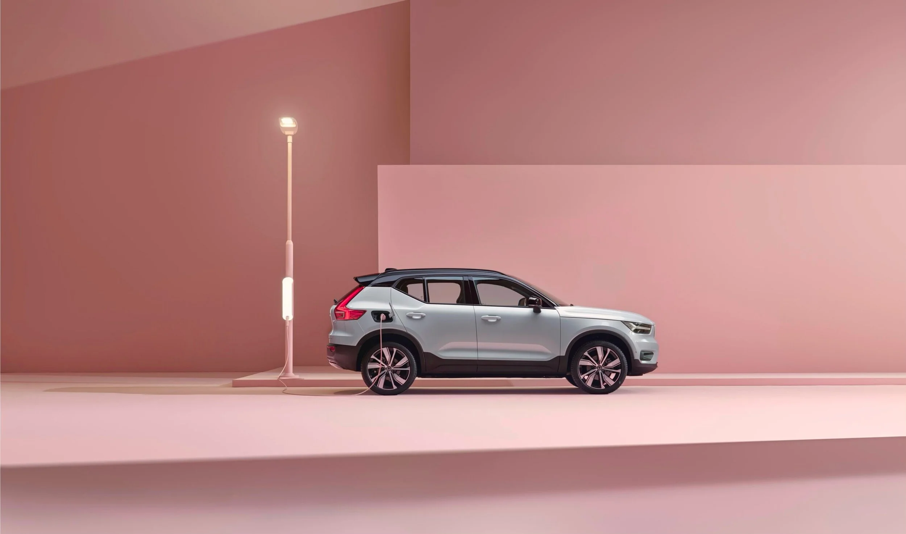
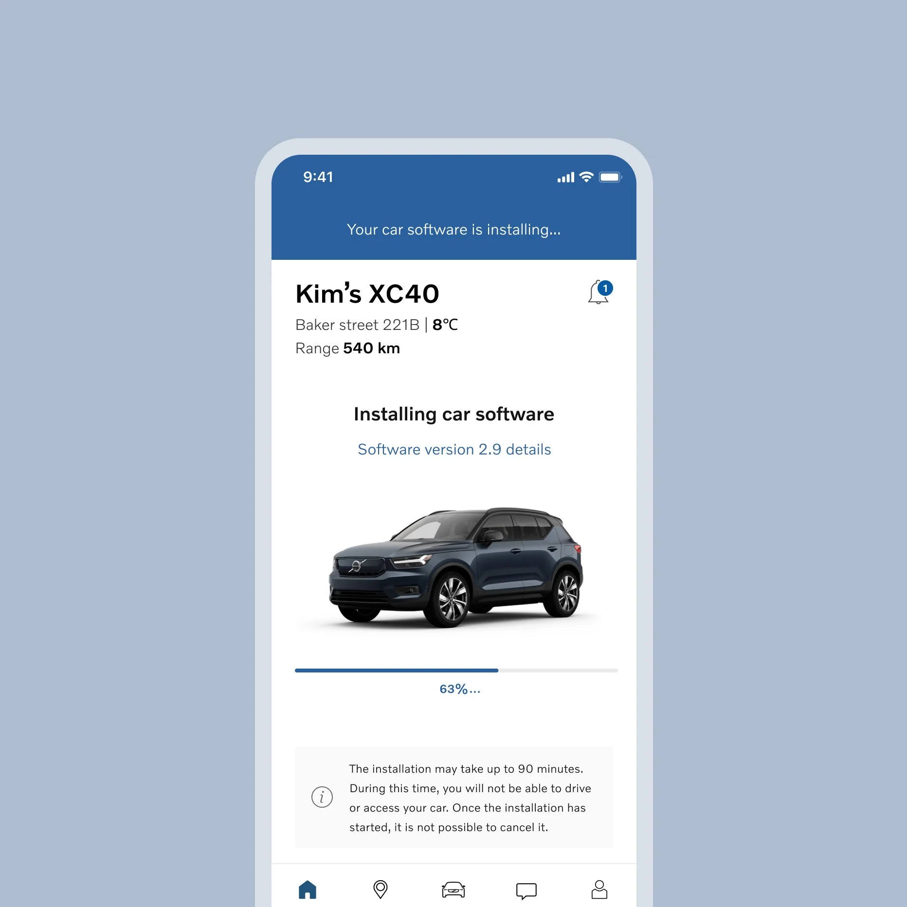
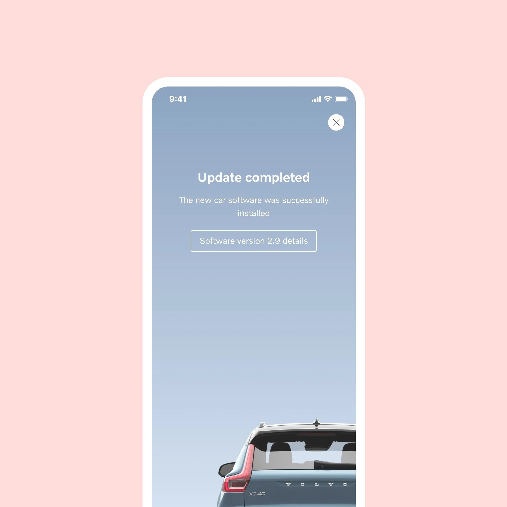

Redesigning how a connected cartalks to its driver.
Client — Volvo CarsRole — UX Design, Communication

ScopeOTA Updates · Inbox · Notifications
PlatformVolvo Cars App, iOS & Android
DeliverablesShipped UX + Figma Design Toolkit
The Brief
Software now reaches a Volvo the way it reaches your phone — over the air. But updating a two-ton computer takes more trust than updating an app. My work focused on every moment the car speaks to its driver.
The Volvo Cars app is the remote control for the car: it unlocks doors, preheats cabins — and increasingly, delivers the software that makes the car better overnight. Yet the communication around those moments had grown fragmented: updates, messages and notifications each spoke with a different voice.
The mission was to enhance how drivers interact with Volvo through three connected surfaces — over-the-air updates, the inbox, and notifications — keeping every touchpoint intuitive and unmistakably Volvo. The work was grounded in extensive market research and repeated rounds of user interviews and testing.
The Work
Four moves
01
OTA Updates
Simplified how drivers schedule and follow software updates — from release notes to install complete — so a car update feels as effortless as a phone update.
02
Notifications
Redesigned push notifications so the right message lands at the right moment. Timely, relevant — never noise.
03
Inbox
Reorganized a flat feed of messages into clear categories — turning the inbox into a place drivers actually read.
04
Design Toolkit
Built a cohesive, scalable communication toolkit in Figma — reusable components that keep every app designer speaking the same language.
The Turning Point
Somewhere between the interview rounds and the first usability tests, one thing became clear: drivers didn't distrust updates — they distrusted surprises.
The insight. Research kept circling the same tension. An update is good news — better software, new features, a safer car. But delivered at the wrong moment, it reads as an interruption from a two-ton machine you depend on. The problem was never the technology; it was the timing and the tone.
The decision. Control moved to the driver. Scheduling became the heart of the OTA experience — pick the moment, see what's changing, follow the install through to complete. The same principle then shaped notifications and the inbox: never speak without a reason, never interrupt without permission.


The Results
Shipped & scaled
Led the launch of enhanced OTA updates across multiple Volvo car platforms
Elevated car ownership — turning the car into a companion, not just a tool
Streamlined the app inbox for clearer, more enjoyable communication
Delivered a scalable Figma communication toolkit for designers and developers — engaging, cohesive experiences, shipped faster
Strengthened the app as a cornerstone channel for car owners — deeper engagement, higher satisfaction
"During his time with us Michel worked on communication tooling and experiences within the app space in Volvo Cars. Key experiences that Michel helped evolve were remote software updates (OTA) that enable the car to update over time via the app — critical for the business. Michel also helped explore, define and deliver the earlier versions of a communication toolkit that is now helping scale the app to more internal users in the company. To top that off, Michel was also a fun colleague and team photographer and is missed dearly."
Rahul Lindberg Sen — Head of UX, Volvo Cars
Looking Back
Three things I keep
01
Trust is a feature
In a car, every message carries the weight of the brand. Communication design isn't a layer on top of the product — it is the product.
02
Systems outlive screens
The screens shipped and moved on. The toolkit stayed — the most lasting deliverable wasn't an interface, it was what other designers now build with.
03
Bring engineering in earlier
The best OTA concepts lived or died on platform constraints. The sooner those surfaced, the better the design got — next time, they're in the first workshop.